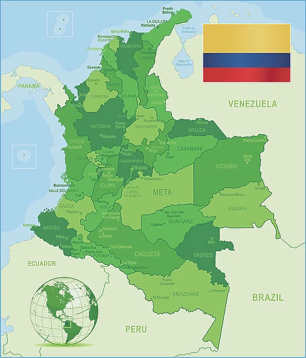

I am from Bogota, Colombia. Colombia, which is spelled with two o's, is located in South America. Colombians pride themselves on their national soccer team. Many of us as children grew up walking to a nearby soccer field and spending a significant amount of time there daily. I believe this has led to the development of incredible players forming the great team we have now.
The Copa America is a prestigious football tournament contested by South American nations, similar to the Euros in Europe. Colombia qualified for the Copa America 2024 by being undefeated in a total of 25 games prior to the tournament. This was a huge deal for Colombians as it united fans across the world.
| Opponent | Tournament Stage | Score |
|---|---|---|
| Peru | Group Stage | 1-1 |
| Chile | Group Stage | 2-0 |
| Paraguay | Quarterfinal | 4-0 |
| Uruguay | Semifinal | 3-2 |
| Argentina | Final | 2-1 |
Colombia had a great run, with a great team and fans uniting. It felt like the world stopped when a match was on TV. Unfortunately, Colombia got defeated in the final against Argentina. Although, due to some controversy and Colombians keeping their values close, they still celebrated. Many soccer fanatics say that Colombia got robbed, and personally, I agree. Despite that, it was such a big accomplishment for Colombia that the Colombian government decided to honor the players with a civic holiday after the day of the final.
James Rodríguez won the best player of the tournament, receiving a golden ball trophy as seen below. His achievements include a record-breaking 6 assists, leadership skills, and consistent performance. He also won several "Player of the Match" trophies. He is my favorite soccer player, which is clearly warranted.